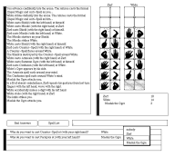

Spellcast is a multiplayer strategy game for Unix machines running X windows.
It concerns a conflict between two or more powerful wizards. The opponents use mystical hand gestures to invoke their spells -- spells of summoning, elemental energy, protection, psionic influence, and good old-fashioned brute force. Each wizard has two hands, a sequence of gestures can contain multiple spells, and some spells require two-handed gestures. This means that timing and forethought are necessary to insure that your defensive spells block all attacks while your attacks get through.
(And before anyone asks -- the rules for this game were written a decade before Magic: The Gathering hit the shelves. I wrote this X version a year or so before Magic came out. Anyway, it doesn't resemble Magic even slightly, except for being about two wizards trying to fry each other's asses. So there.)
Spellcast is free (yee-ha!)

Here is a screen shot of Spellcast (monochrome GIF image, 23K).
You can download the source code. It's a tarred, compressed file, about 129K. It should build easily on any Unix platform with X windows.
You can also get it from any comp.sources.games archive on the Net. Unfortunately, there is a bug in that version (patchlevel 1), and the comp.sources.games moderator dropped into null-space before the patch went out. Downloading it from this page is your best bet.
The rules for the paper-and-pencil version are archived here.
The original paper-and-pencil version of this game, entitled Spellbinder, was created by Richard Bartle; it was printed in his zine Sauce of the Nile. He attempted to have it commercially produced, but apparently didn't get very far. (Note: Richard Bartle wishes me to say that he is not dead. He can be contacted at 76703.3042@compuserve.com.)
It was reprinted (with some changes) as Spellcaster in the fanzine Duel Purpose, written by Mike Lean. From there, it was scanned and posted to the Net by Andrew Buchanan (buchanan@heron.enet.dec.com). I grabbed it and wrote this X version. Richard Bartle has given his permission to distribute it as long as it remains free.
A permanent Spellcast server is on-line at http://spellcast.vulpyne.net/ (as of May 2001). You must be running an X Windows display to use it; see the help page. Thanks to Erik Sørensen for maintaining this.
Last updated May 15, 2001.
{kind=link}